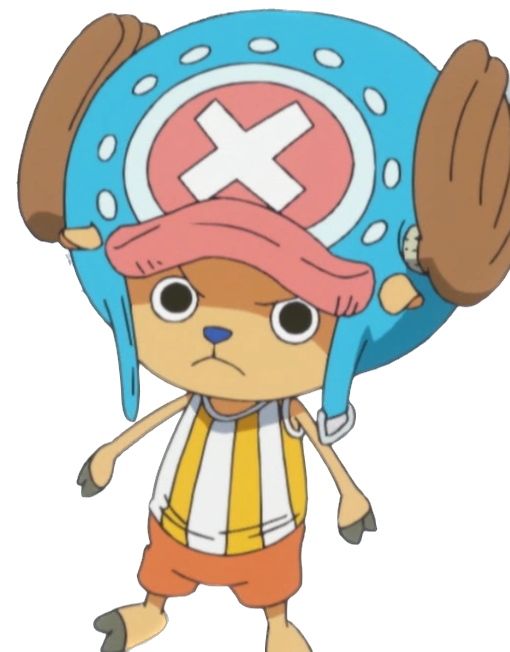

Fun Facts about yours truly ;)
- They call me the "Devil Child" and put a bounty of 79 million berries on my head when I was just 8 years old - I was the youngest person to ever receive a bounty.
- I ate the Hana Hana no Mi (Flower-Flower Fruit), which allows me to sprout replicas of my body parts on any surface.
- I spent 20 years on the run before joining the Straw Hat Pirates, working with various criminal organizations just to survive.
- I have what some call a dark sense of humor. I often make observations that seem to frighten my crewmates.
- I often use my devil fruit powers to create eyes and ears for spying and surveillance.
I don't have favorites. But if i did-


I thoroughly enjoy this video.
In need of ~advice?
I gotchu, just click here.